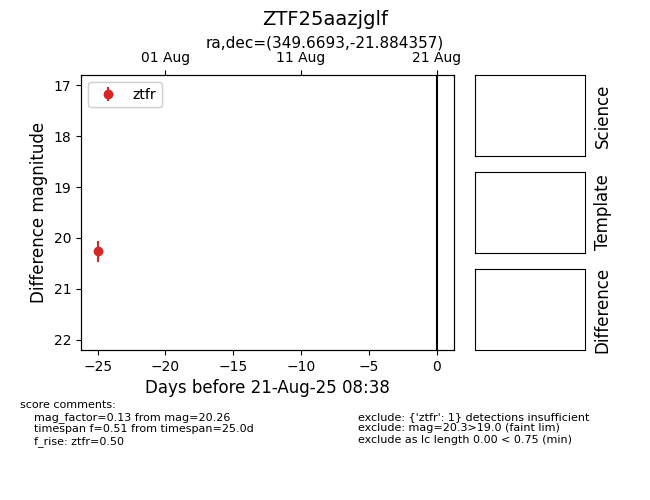

Target ZTF25aazjglf at 2025-08-21 08:38, see:
FINK: fink-portal.org/ZTF25aazjglf
Lasair: lasair-ztf.lsst.ac.uk/objects/ZTF25aazjglf
ALeRCE: alerce.online/object/ZTF25aazjglf
alt names
ZTF25aazjglf (ztf,alerce)
coordinates:
equatorial (ra, dec) = (349.6693,-21.88436)
galactic (l, b) = (41.8299,-68.29312)
photometry
last ztfr=20.26
1 ztfr detections
